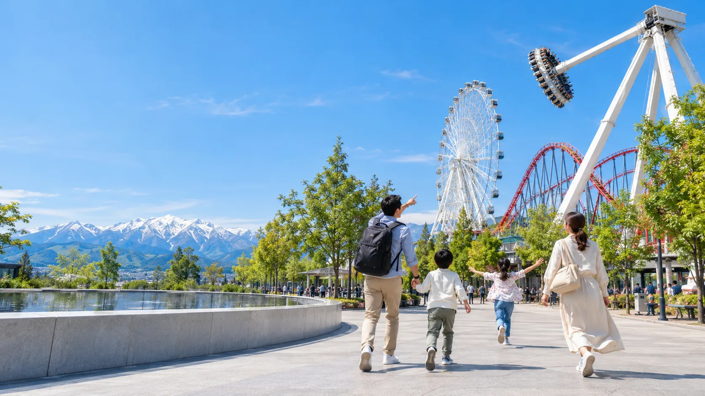
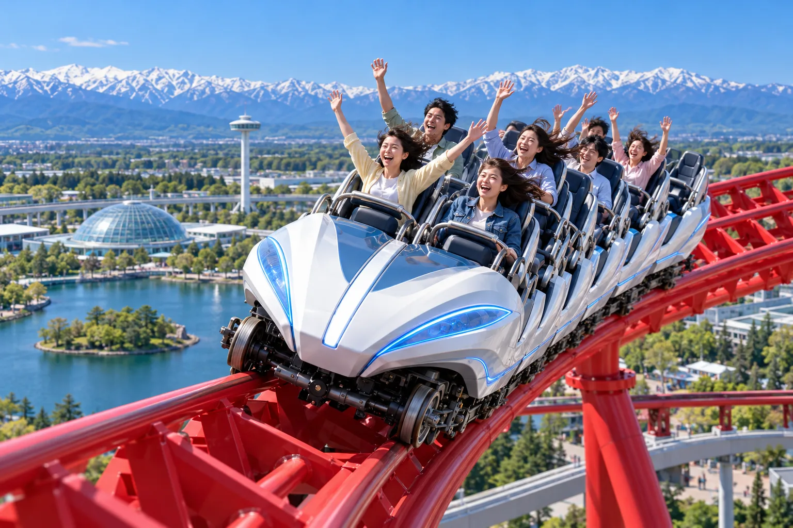
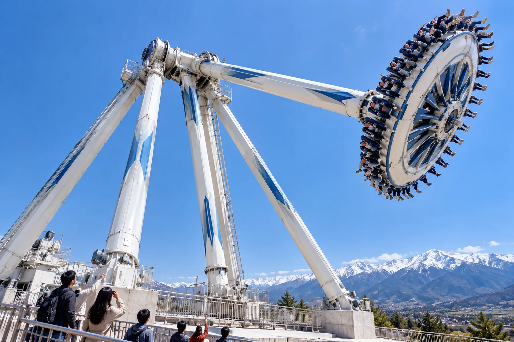
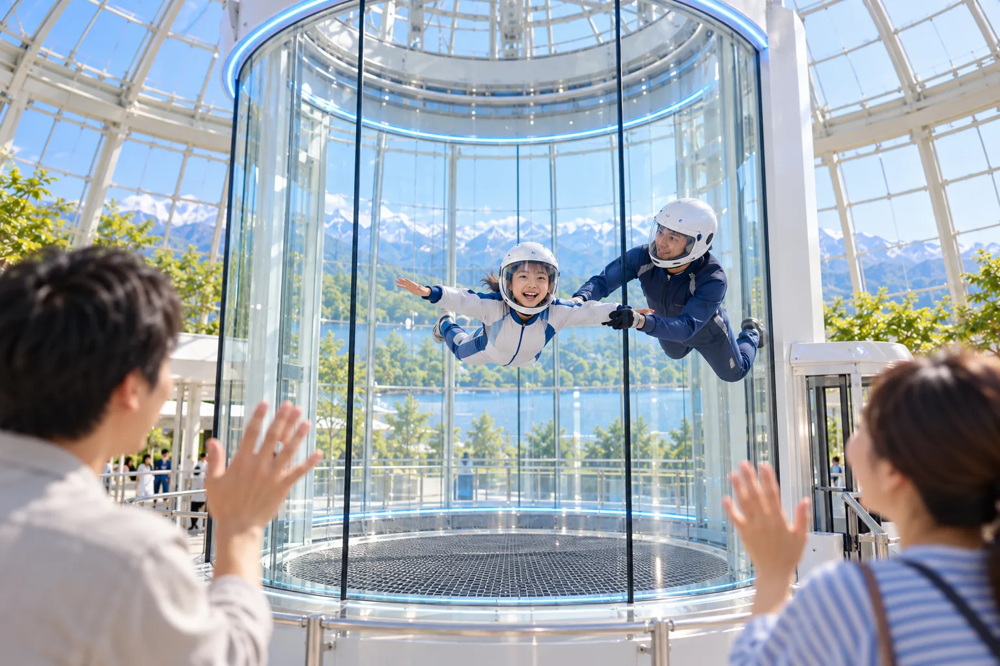
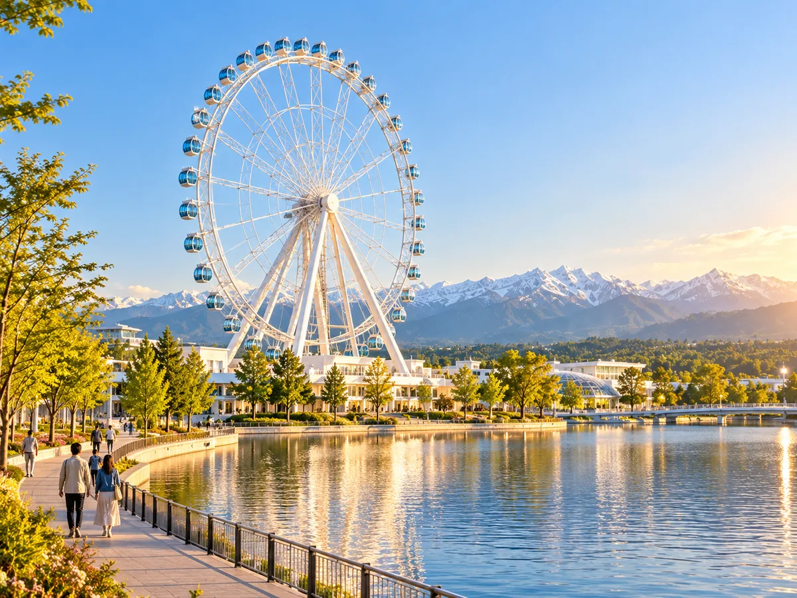
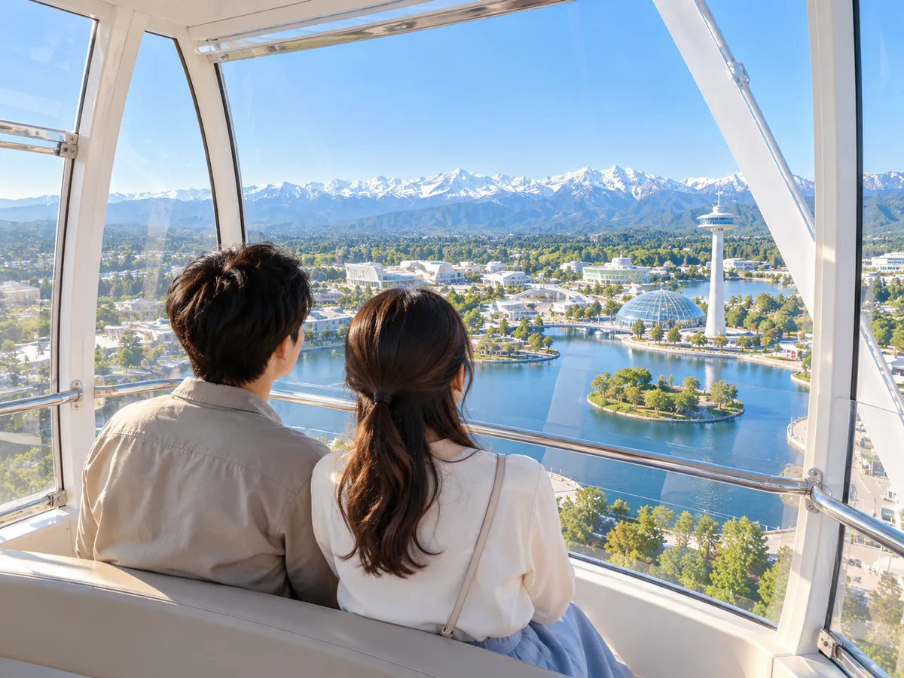

想像を超える
FEATURED ATTRACTIONS

地上60mへ一気に駆け上がる、空のコースター。

重力から解き放たれる、無重力スイングのスリル。

ガラスドームの中で、風に乗って宙に浮かぶ。宇宙飛行のような浮遊感を味わう屋内フライト体験。
MORE EXPERIENCES


LANDMARK
パークのどこからでも見える、白い大観覧車。ゆっくりと空へ昇るゴンドラからは、中央湖とパークの景色、その向こうに広がる雄大な立山連峰を一望できます。
EXPERIENCE GUIDE
身長や年齢の条件は、アトラクションごとに異なります。
最終受付時刻は、アトラクションごとに異なります。各アトラクションの受付は、運営終了（21:00）までにご乗車いただける時点を目安に終了します。当日の受付状況は、園内のインフォメーションボードとお手持ちのデバイスでご確認いただけます。
強い光や大きな音、揺れがある体験は、入口で事前にお知らせします。
車いすのまま、または乗り換えて利用できる体験があります。
NEXT
夜のショーや、来園の計画もチェックしよう。